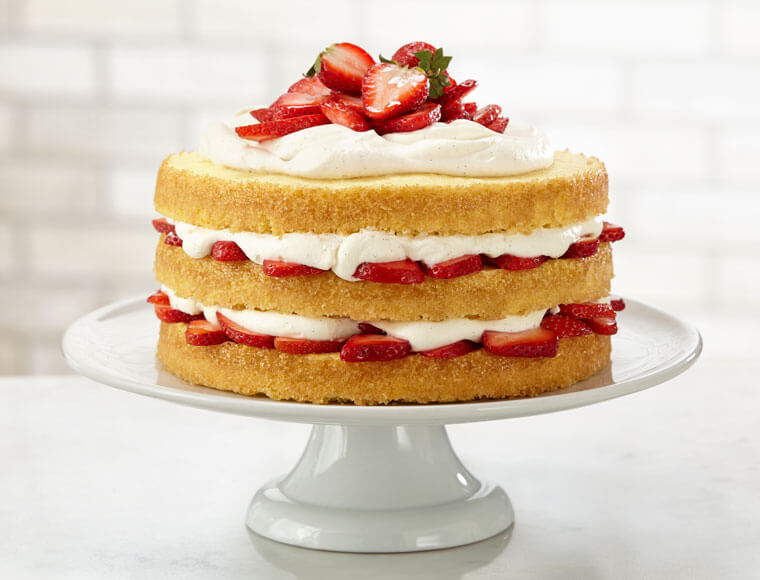

Strawberry Shortcake

There's a kind of magic in a summer recipe that you can make wherever you are, provided that wherever you are has, say, flour, butter, an oven and whatever fruit is most glorious is at that very moment. This strawberry shortcake is so simple that you can make it within the hour, and so satisfying that it may become your go-to for summer, the recipe you keep in your back pocket. Strawberries are the classic choice, but this would also be heavenly in high summer with very ripe peaches or any other juicy, macerated fruit.
Ingredients
Cake
- 1 cup (250 ml) unbleached all-purpose flour
- 1 teaspoon (5 ml) baking powder
- 1/4 teaspoon (1 ml) salt
- 3 eggs, separated
- 1 pinch cream of tartar
- 1 1/4 cups (310 ml) sugar
- 1/2 cup (125 ml) unsalted butter, softened
- 1 teaspoon (5 ml) vanilla extract
- 1/2 cup (125 ml) milk
Vanilla Strawberries
- 1 vanilla bean
- 1 1/2 cups (375 ml) sliced fresh strawberries
- 1 tablespoon (15 ml) sugar
Whipped Cream
- 1 1/2 cups (375 ml) 35% cream
- 3 tablespoons (45 ml) sugar
- 1 teaspoon (5 ml) vanilla extract
- Fresh strawberries, whole or cut into wedges for garnish
Steps
Cake
- With the rack in the middle position, preheat the oven to 180 °C (350 °F). Butter a 20-cm (8-inch) springform pan and line the bottom with parchment paper. Set aside.
- In a bowl, combine the flour, baking powder, and salt. Set aside.
- In another bowl, beat the egg whites and cream of tartar with an electric mixer until soft peaks form. Gradually add 125 ml (1/2 cup) of the sugar, beating until stiff peaks form. Set aside.
- In a third bowl, beat the remaining sugar, the butter, egg yolks, and vanilla with an electric mixer. At low speed, add the dry ingredients alternately with the milk.
- Stir a quarter of the meringue into the batter to lighten it. With a spatula, gently fold in the remaining meringue. Pour into the prepared pan.
- Bake for about 55 minutes or until a toothpick inserted in the centre of the cake comes out clean. Unmould immediately and let completely cool on a wire rack.
Vanilla Strawberries
- Split the vanilla bean in half lengthwise. With the tip of a knife, remove the seeds from the vanilla pod.
- In a bowl, combine the strawberries, sugar, vanilla seeds, and pod. Allow to macerate for about 15 minutes. Drain. Remove the pod. Set aside.
Whipped Cream
- In a bowl, whip the cream, sugar, and vanilla with an electric mixer until stiff peaks form. Set aside.
Assembly
- Cut the cake in half horizontally to make two slices. Spread 250 ml (1 cup) of the whipped cream on the cut side of each slice. Scatter the drained vanilla strawberries on the whipped cream of a slice of cake. Cover with the other slice of cake, whipped cream side down. Garnish the top of the cake with the remaining whipped cream. Garnish with fresh strawberries.